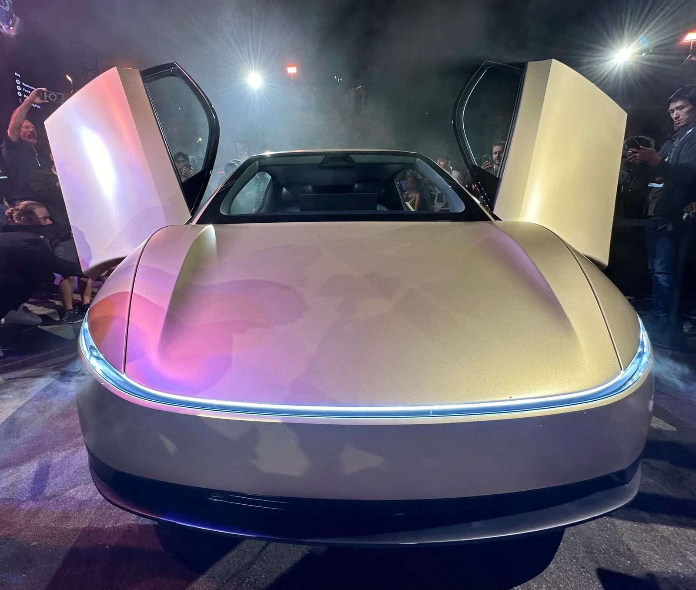
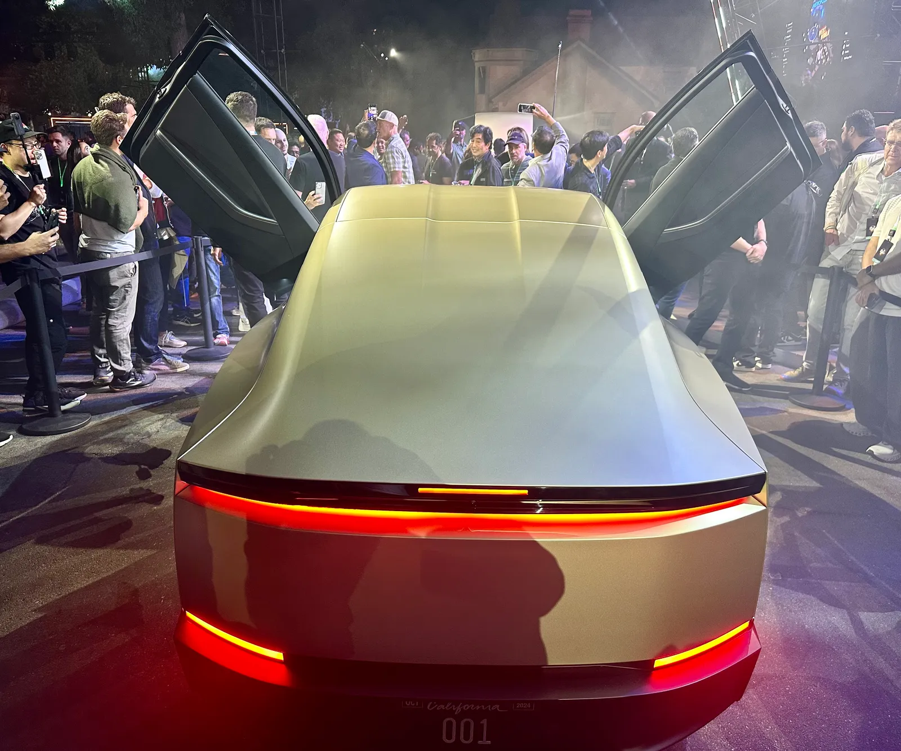
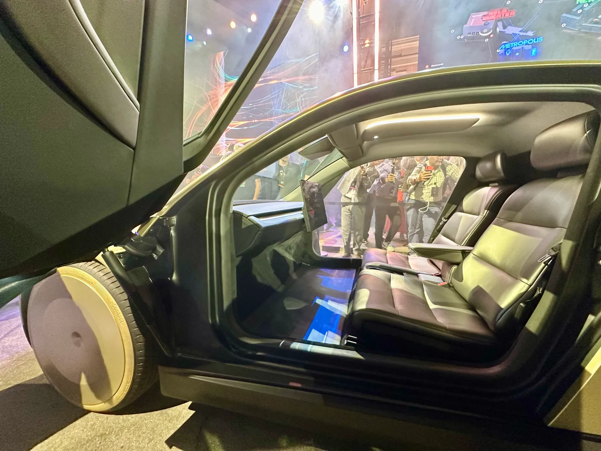

▲ 걸윙 도어와 미래지향적 디자인으로 주목받은 테슬라 사이버캡. 이번엔 안전 인증 절차 자체가 도마 위에 올랐다 ⓒ Wikimedia Commons
"브레이크 페달도 없는 차, 어떻게 인증했는가." 미국 정부가 테슬라에 던진 질문은 이렇게 단순하고, 그래서 더 뼈아프다.
미국 도로교통안전국(NHTSA)이 테슬라의 로보택시 사이버캡(Cybercab)을 향해 21개 항목의 특별명령(Special Order)을 발동했다. 답변 시한은 9월 30일. 사이버캡이 텍사스 오스틴에서 상업 서비스를 시작한 지 불과 일주일 만에 나온 조치다. 무엇을 묻고 있는지, 왜 지금인지, 어떤 결과로 이어질 수 있는지를 정리했다.
1. NHTSA가 보낸 '21개 질문지'의 정체
이번 특별명령은 지난 9월 10일 발동됐다. 테슬라는 사이버캡이 어떻게 대수가 운영되고 있는지, 어느 지역에 배치돼 있는지부터 시작해 어떤 연방 자동차 안전기준(FMVSS)을 적용 대상으로 판단했는지까지 21개 항목에 대해 선서 진술서(sworn statement) 형태로 답변해야 한다.
단순한 자료 요청이 아니라는 점이 특징이다. 선서 진술이라는 형식 자체가, 허위 진술이나 불성실한 답변에 대해 훨씬 무거운 법적 책임을 지운다는 의미다.
▲ 걸윙 도어와 미래지향적 디자인으로 주목받은 테슬라 사이버캡. 이번엔 안전 인증 절차 자체가 도마 위에 올랐다 ⓒ Wikimedia Commons
2. 가장 뼈아픈 질문 — "브레이크 페달이 왜 없나"
21개 질의 중 가장 근본적인 것은 사이버캡에 페달이 아예 없다는 사실에서 출발한다. 사이버캡은 스티어링 휠은 물론 브레이크 페달도 상시 장착돼 있지 않은, 완전 무인 운행을 전제로 설계된 차량이다. 하지만 연방 안전기준 상당수는 '운전자가 직접 조작하는 페달·조향장치'의 존재를 전제로 작성돼 있다.
NHTSA는 브레이크 페달이 상시 설치돼 있지 않은 차량이 어떻게 관련 연방기준을 충족한다고 판단했는지를 구체적으로 설명하라고 요구했다. 이는 사이버캡의 상업화 자체를 지탱하는 인증 논리의 핵심을 정면으로 겨냥한 질문이다.
📍 임시 조향·제동장치 의혹
21개 질의 중에는 인증 시험 당시 임시로 조향장치나 브레이크 페달을 장착했는지를 묻는 항목도 포함됐다. 만약 시험 통과를 위해 일시적으로 이런 장치를 달았다가 이후 제거했다면, 그 제거 행위 자체가 연방 안전규정을 위반하는 것은 아닌지가 새로운 쟁점으로 떠올랐다.
3. 왜 하필 지금 — AQ26002 조사의 배경
이번 특별명령은 새로 시작된 것이 아니라, 이미 진행 중이던 조사의 연장선이다. NHTSA는 테슬라가 9월 3일 오스틴에서 사이버캡 상업 서비스를 시작하자마자 감사 질의(Audit Query, 조사번호 AQ26002)를 열었다. 이번 21개 질문 특별명령은 그 조사가 한 단계 격상된 결과로 풀이된다.
상업 서비스 개시부터 정부의 공식 조사 착수, 특별명령 발동까지 걸린 시간은 단 일주일 남짓. 그만큼 규제 당국이 이 사안을 심각하게 보고 있다는 신호로 해석할 수 있다.
| 시점 | 내용 |
|---|---|
| 9월 3일 | 테슬라, 오스틴에서 사이버캡 상업 서비스 개시 |
| 9월 3일 | NHTSA, 감사 질의(AQ26002) 개시 |
| 9월 10일 | NHTSA, 21개 질의 담긴 특별명령(Special Order) 발동 |
| 9월 30일 | 테슬라 답변 시한 — 선서 진술서 형태로 제출해야 |

▲ 공개 행사에서 큰 주목을 받았던 사이버캡의 후면. 상업 서비스 개시 일주일 만에 정부 조사가 격상됐다 ⓒ Wikimedia Commons
4. 21개 질문이 훑는 범위 — 운영 현황부터 설계 철학까지
질의 범위는 생각보다 넓다. 단순히 몇 대가 어디서 운행 중인지 같은 운영 현황부터, 어떤 연방 안전기준을 자체적으로 적용 대상이라 판단했는지에 대한 근거, 그리고 앞서 언급한 페달·조향장치 관련 설계 철학까지 포괄한다.
업계에서는 이를 두고 "사이버캡이 걸어온 상용화 절차 전체를 처음부터 다시 들여다보겠다는 신호"로 해석하는 시각이 많다. 단순 결함 리콜과 달리, 인증 근거 자체의 적법성을 묻는 조사이기 때문이다.

▲ 사이버캡의 카메라 기반 자율주행은 이미 양산 중인 모델 3·모델 Y의 FSD 기술을 그대로 물려받았다 ⓒ Wikimedia Commons
✅ 이번 조사가 갖는 의미
· 결함 조사가 아니다 — 사고나 고장이 아니라 애초의 인증 절차 자체가 쟁점
· 선서 진술서 요구 — 일반 자료 제출보다 훨씬 무거운 법적 책임이 따른다
· 상업 서비스 개시 직후 조사 — 정식 서비스 전환 시점과 맞물려 시장의 관심이 집중
· 브레이크 페달 없는 설계 — 완전 무인차 상용화의 인증 기준 자체가 시험대에 올랐다
5. 답변 못 하면? 최대 1억 3,935만 달러 과징금
테슬라가 9월 30일까지 21개 질의에 충실하고 정확하게 답변하지 못하면, 상당한 재정적 리스크에 노출된다. NHTSA는 특별명령 불이행이나 허위 답변에 대해 1일 최대 8,874달러씩 누적되는 방식으로 최대 1억 3,935만 달러(약 1,390억 원) 규모의 민사 과징금을 부과할 수 있다고 밝혔다.
단순한 벌금 이상의 의미도 있다. NHTSA는 이번 사안이 고의적인 허위 인증으로 확인될 경우 최대 징역 15년의 형사처벌까지 검토될 수 있다고 경고했다. 조사 결과에 따라 사이버캡의 운행 범위 제한, 추가 인증 요구, 최악의 경우 서비스 중단 명령까지 이어질 가능성을 배제할 수 없다는 게 업계 관측이다.
NHTSA의 관련 조사 자료는 공식 채널에서 확인할 수 있다. NHTSA 공식 홈페이지 바로가기

▲ 스티어링 휠과 페달을 상시 배제한 사이버캡의 실내. 이 설계 자체가 이번 조사의 핵심 쟁점이다 ⓒ Wikimedia Commons
6. 관전 포인트 — 테슬라 로보택시 전략의 분수령
이번 특별명령은 테슬라의 로보택시 확장 전략 전반에 그림자를 드리우고 있다. 사이버캡은 스티어링 휠과 페달이 없는 '완전 무인 전용' 설계를 앞세워 기존 차량 개조 방식의 로보택시와 차별화를 노려온 모델이다. 그런데 그 차별화 포인트가 그대로 규제 리스크의 핵심으로 지목된 셈이다.
9월 30일 답변 시한 이후 NHTSA가 어떤 후속 조치를 취할지가 다음 관전 포인트다. 답변 내용에 따라 추가 리콜 조사(RQ)로 격상되거나, 반대로 상황이 일단락될 수도 있다. 완전 무인 로보택시의 상용화가 규제 당국의 인증 논리를 얼마나 설득할 수 있을지가 시험대에 올랐다.
7. 요약
NHTSA는 테슬라 사이버캡의 상업 서비스 개시 직후 감사 질의(AQ26002)를 열었고, 9월 10일 21개 항목의 특별명령을 발동했다. 테슬라는 9월 30일까지 선서 진술서 형태로 답변해야 한다.
핵심 쟁점은 브레이크 페달과 조향장치가 상시 장착되지 않은 차량을 어떻게 연방 안전기준에 맞춰 인증했는가이며, 인증 시험 때 임시 장치를 사용했는지도 의혹 대상이다. 불성실한 답변에는 최대 1억 3,935만 달러(약 1,390억 원)의 민사 과징금과 최대 징역 15년의 형사처벌까지 거론되고 있다.
이번 조사는 결함이 아니라 인증 절차 자체를 겨냥한다는 점에서, 완전 무인 로보택시 상용화의 규제 기준을 시험하는 분수령이 될 전망이다.